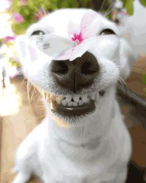

Cachorros
A grande diversidade de raças de cachorro que existe hoje é resultado de cruzamentos feitos pelo homem. Muitas delas foram criadas na busca por cachorros que correspondessem a características físicas específicas e com uma personalidade adequada à função que deveriam desempenhar. Ao longo de 100 mil anos, quando surgiu o cachorro, descendente do lobo cinzento, as cruzas resultaram em mais de 400 raças de cachorro.
- Shih tzu
- Pinscher